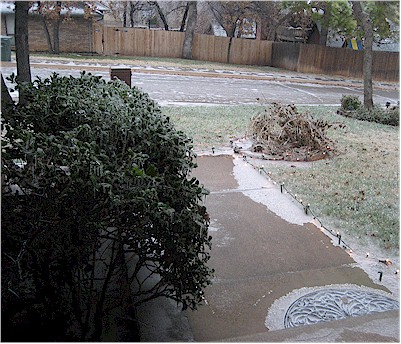
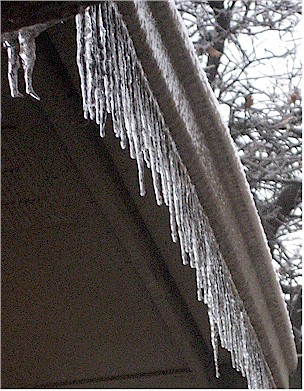
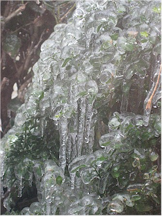
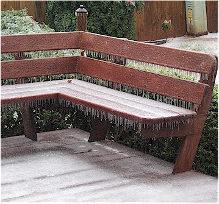
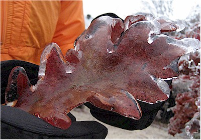

December 10, 2007
| We got a big ice storm on the 10th of December
that stopped everything in its tracks - including a loss of power
over much of the area. It was a pretty major deal. Eric and I
were very blessed that we did not lose power - some people were without
power for more than a week.
I did get a kick out of the way the media had to make up a dramatic
name for it. We will now and forever refer to it as, "Ice Storm
2007." |
|
 Looking out the front window to the ice on the street. |
|
 |
 |
| The icicles hanging from the eaves. It was beautiful but we lost many, many trees in the metro area. |
Close-up of the ice on the bushes out front. The bush was one solid mass because of the ice. |
 |
 |
| Everything was totally covered with ice. | We took a walk later that afternoon (and I didn't even fall
down!) and took this picture of a frozen leaf that weighed about a pound. |